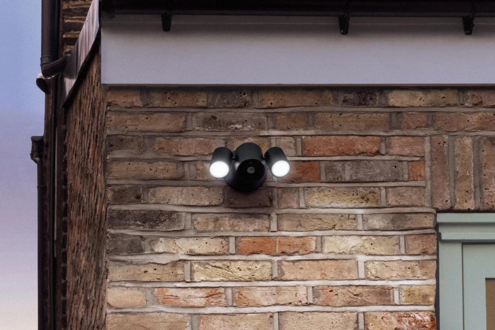

Smart home · Field note 071
Apple Home Collection preorders begin
Three LG accessories show December shipping estimates.

Apple opened preorders for selected Home Collection accessories on November 13, according to The Verge’s reporting.
The LG Outdoor Cam costs $299.95, the Indoor Cam $199.95, and the Video Doorbell $249.95. The report lists estimated shipping between December 11 and December 17; estimates can change.
Other listed cameras, locks, thermostats, and sensors did not yet have preorder dates. Apple’s Outdoor Cam listing confirms one-tap iPhone setup, 2.5K recording, and built-in storage that keeps recording when Wi-Fi fails.